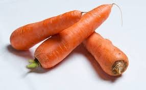
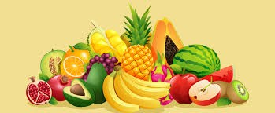

conhecendo os alimentos: do natural aos industrializados
Os alimentos in natura são aqueles obtidos diretamente da natureza, sem sofrer alterações industriais ou com o mínimo de processamento possível. Eles chegam ao consumidor praticamente da mesma forma como foram encontrados na natureza, preservando suas características originais, nutrientes, sabor e textura.
Fazem parte desse grupo frutas, verduras, legumes, raízes, ovos, leite fresco, carnes e peixes frescos. Exemplos comuns são banana, maçã, alface, tomate, cenoura, mandioca e feijão seco. Esses alimentos são considerados fundamentais para uma alimentação saudável, pois são ricos em vitaminas, minerais, fibras e outras substâncias importantes para o bom funcionamento do organismo.
O consumo de alimentos in natura ajuda na prevenção de doenças como obesidade, diabetes e hipertensão, além de contribuir para mais energia e qualidade de vida. Eles também costumam ter menor quantidade de açúcar, gordura e sódio quando comparados aos alimentos industrializados.
Por isso, especialistas em nutrição recomendam que os alimentos in natura sejam a base da alimentação diária, combinados de forma equilibrada e variada. Além de mais saudáveis, eles incentivam hábitos alimentares mais naturais e uma relação mais consciente com a comida.
Os alimentos in natura vêm diretamente da natureza. Eles podem ter origem vegetal ou animal e são obtidos sem passar por grandes processos industriais.
Os alimentos in natura são importantes para a saúde porque fornecem nutrientes essenciais para o funcionamento do corpo, como vitaminas, minerais, fibras e proteínas. Eles ajudam no crescimento, dão energia e fortalecem o organismo.
Além disso, o consumo desses alimentos contribui para a prevenção de doenças como obesidade, diabetes, pressão alta e problemas cardíacos, pois possuem menos açúcar, gordura e sal do que muitos alimentos industrializados.
As fibras presentes em frutas, verduras e legumes também melhoram a digestão e ajudam no bom funcionamento do intestino. Por isso, uma alimentação baseada em alimentos in natura é considerada mais saudável e equilibrada.

